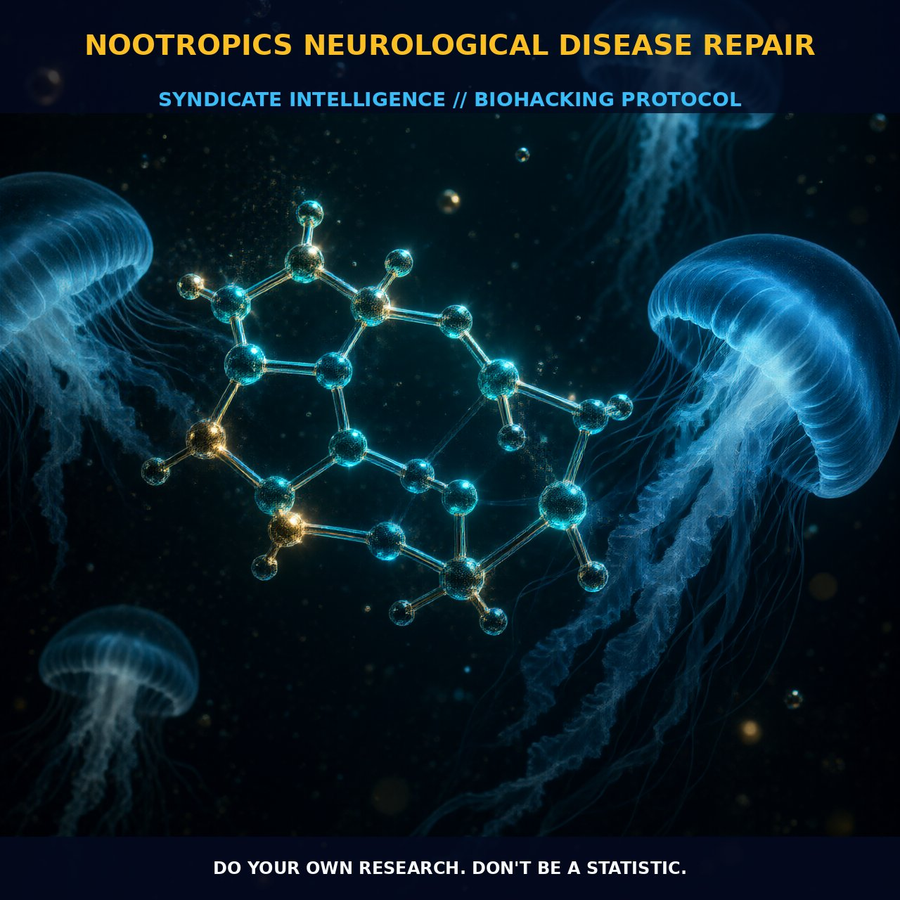

Repairing Neurological Disease with Nootropics

1. The Mechanism
Nootropics are neuromodulatory agents that offer a wide range of benefits to the brain, from enhancing cognitive function to repairing neurological damage. These compounds typically work through a variety of mechanisms, including influencing neurotransmitter levels, modulating neural pathways, and enhancing cellular metabolism.
Many nootropics increase the availability of acetylcholine, a neurotransmitter crucial for memory and learning. They also promote the growth of new neurons and synapses, which can help repair and strengthen neural networks damaged by disease or aging. Additionally, nootropics often improve blood flow and oxygenation to the brain, which can enhance neuronal function and protect against oxidative stress.
Nootropics exert their effects through several key pathways. Many nootropics act by modulating glutamate receptors, such as NMDA receptors, which are critical for synaptic plasticity and memory formation. By enhancing the efficiency of these receptors, nootropics can improve cognitive function and protect neurons from excitotoxic damage.
Some nootropics also act on the cholinergic system, increasing the availability of acetylcholine and thereby enhancing cognitive processes such as memory and attention. Furthermore, nootropics can influence the metabolism of glucose and other energy substrates in the brain, providing neurons with the necessary fuel for optimal function. This metabolic support can help maintain the health and integrity of neuronal structures, contributing to the repair and maintenance of neural networks.
2. Biological Leverage
The biological leverage of nootropics in repairing neurological disease lies primarily in their ability to enhance and support key neural processes. One of the most significant areas of leverage is the modulation of neurotransmitter systems, particularly the cholinergic and glutamatergic systems. By increasing the availability of acetylcholine, nootropics can improve synaptic function and enhance cognitive processes such as memory and attention. This is particularly beneficial in diseases like Alzheimer's, where cholinergic deficits are a hallmark.
Additionally, nootropics can enhance the function of NMDA receptors, which are crucial for synaptic plasticity and learning. This modulation can help repair and maintain neural networks that are damaged by disease or aging. Another critical aspect of nootropics' biological leverage is their ability to improve blood flow and oxygenation to the brain. Enhanced cerebral blood flow ensures that neurons receive adequate nutrients and oxygen, which is essential for maintaining their optimal function.
This improved circulation can also help remove metabolic waste products and reduce oxidative stress, contributing to the overall health and longevity of neurons. Furthermore, nootropics can reduce inflammation and enhance the brain's repair mechanisms, which can be particularly beneficial in conditions like Alzheimer's and dementia where inflammation and oxidative stress are major contributors to neuronal damage.
3. Tactical Implementation
When it comes to implementing a nootropic regimen for repairing neurological disease, the key is to select the right compounds and dosages. For instance, cholinergic nootropics such as choline bitartrate and huperzine A are effective in increasing acetylcholine levels, which can support cognitive function and repair cholinergic deficits in diseases like Alzheimer's. Additionally, nootropics like piracetam and aniracetam can enhance glutamatergic function, supporting synaptic plasticity and neural repair.
These compounds are typically dosed in the range of 800-2000 mg per day, depending on the specific compound and individual response. To further enhance the effectiveness of the nootropic stack, it is advisable to include compounds that improve blood flow and oxygenation to the brain, such as vinpocetine and ginkgo biloba. These nootropics can help ensure that neurons receive adequate nutrients and oxygen, supporting their optimal function and repair.
Additionally, incorporating anti-inflammatory nootropics like curcumin and omega-3 fatty acids can help reduce oxidative stress and inflammation in the brain, further supporting neural repair and maintenance. A well-rounded stack should also include neuroprotective compounds like alpha-GPC and bacopa monnieri to support the overall health and longevity of neurons.
Prostar Life Hack
A well-rounded nootropic stack should include cholinergic and glutamatergic enhancers, blood flow and oxygenation boosters, anti-inflammatories, and neuroprotective compounds. For instance, combining choline bitartrate with piracetam can provide comprehensive support for synaptic function and repair.
[ AUTHOR: LEAD TECHNICAL RESEARCHER ]